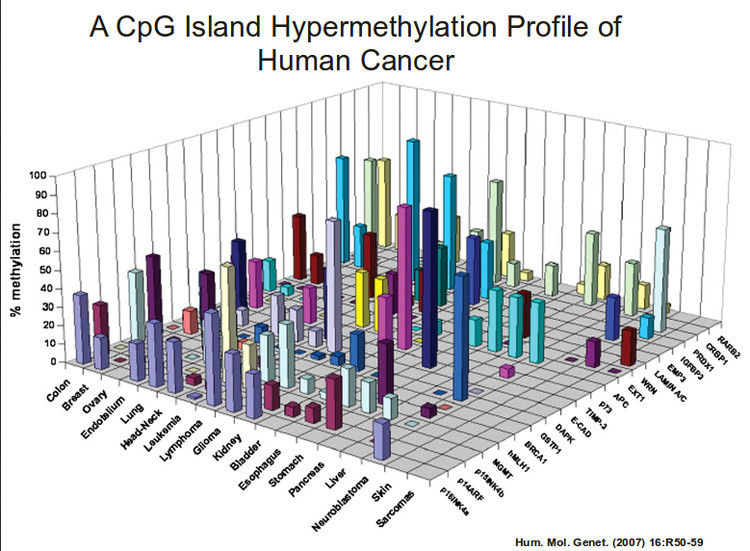
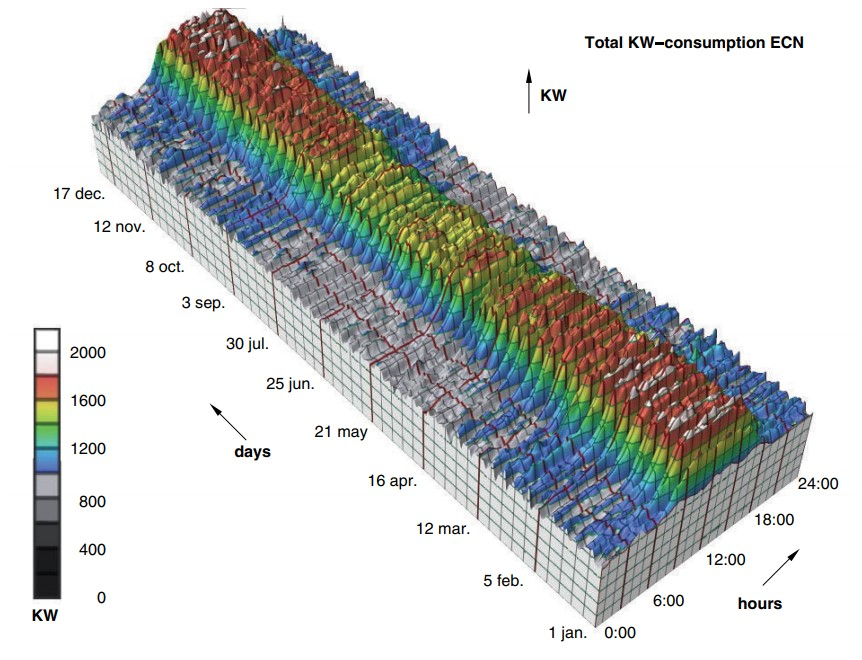
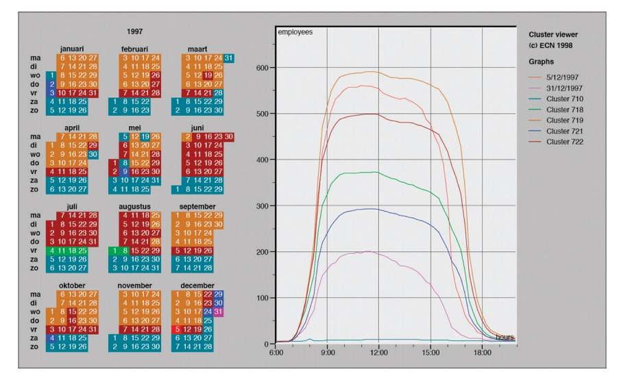

12a: Rules of Thumb
Guidelines on 3D, animation and interaction
Discussion topics
- No unjustified 3D
- Animation vs side-to-side
- Schneiderman's mantra
- Latency and feedback
- Interactivity: Power and costs
- Function over form
- Summary + future perspectives
No unjustified 3D
Not when 2D will suffice

According to Steven's Psychophysical Power Law, depth position judgement accuracy in 3D (0.67) is worse than 2D planar position judgement accuracy (1).
It is even more inaccurate than 2D area judgements (0.7).
The problems of 3D
Problem of occlusion: Where objects cannot be seen because they are hidden behind others.
Problem of perspective distortion: Foreshortening perspective gives the scene a sense of depth, but this screws up the planar 2D spatial length and size channel.
Bad 3D
Beyond the 3D, are there any other problems with this chart?
The issues of 3D
If you're looking at things from one fixed viewpoint, objects can be hidden and distorted.
Stereographic depth cues in real-life — e.g. shadows — are often missing. Adding these cues can cause a bigger headache as they can screw with the color channel and also create visual clutter.
Other issues abound: E.g. tilted text is hard to read.
Interaction can fix 3D
Interactive navigation can fix this (shifting the camera around) — motion parallax allows us to perceive 3D properly.
However navigation takes time and imposes cognitive load, and a 2D chart may still be easier to understand.
From this...
...to this
Linked 2D views of derived aggregate curves and the calendar allow direct comparison and show more fine-grained patterns. From van Wijk and van Selow 99.
Point-based displays were found to outperform information landscapes in an empirical study of visual encodings for dimensionally reduced data.
(a) Colored points. (b) Grayscale points. (c) Colored 2D landscape. (d) Grayscale 2D landscape. (e) Colored 3D landscape. (f) Grayscale 3D landscape. (g) Height only. From Tory et al.
To 3D, or not to 3D
Is there ever a good time to use 3D?, Dataviz Today
The issue with 3D in Data Visualization, from Data to Viz
Visualising for Space from Low-Earth Orbit, Data Viz SG
Animations or side-by-side?
Eyes beat memory
Working memory is a limited resource, and once that is exhausted, people will fail to absorb all of the information.
Using our eyes to switch between different views that are visible simultaneously has much lower cognitive load than relying on memory.
The case for faceting
For tasks requiring detailed comparison across many views, seeing all the views at once side by side can be more effective than animation, i.e. faceting, or small multiples.
So why animations in viz?
- Narrative storytelling, guided walkthrough
- Transitions from one state to another
- Video-style playback of a multiframe sequence: play, pause, stop, rewind, step through
Guidelines for animation
- Careful choreography - one change in one place at a time! Too much change and it becomes too noisy.
- Transitions help the user maintain context, e.g. understanding how the data has changed.
- Animation is often used to show data in the time dimension - something that intuitively makes sense.
Overview first, zoom and filter, details on demand
Also known as Schneiderman's visual information-seeking mantra, an interactive visualization design pattern.
The Eyes Have It: A Task by Data Type Taxonomy for Information Visualizations , Ben Schneiderman
Schneiderman's mantra: why
This allows users to step through the ladder of abstraction for moderate dataset sizes.
- Overview: Summarize.
- Zoom and filter: Navigation / reduction.
- Details on demand: selection / filter.
For enormous datasets, the related design pattern: Search, Show Context, Expand on Demand (Ivan Ham, Perer) may be more appropriate.
Schneiderman's mantra: examples
Schneiderman's Mantra, Hampdata Visualization
3 rules for interactive data visualization, Vlad Kozhevnikov
Latency classes
The latency of interaction — how much time it takes for the system to respond to the user action — matters immensely for interaction design.
Effects of perceptual psychology depends on the time scale of the phenomena, which were classified into latency and response time limits by Jakob Nielson.
Powers of 10: Time Scales in User Experience, Jakob Nielson
Nielson is probably the most well-known for his usability heuristics in interactive design.
Latency: implications
Feedback is confirmation that an action was completed, and this impacts visualizations.
- For visual cues, feedback latency should be within the class of 1 sec (E.g. tooltipping, highlighting)
- For system updates (E.g. filters), considerations on how to store / retrieve data (local cache, network, etc.) makes a difference.
- If it goes into the 10s class, consider having a load progress bar.
The 3 Response Time Limits in Interaction Design, Jakob Nielson
The Effects of Interactive Latency on Exploratory Visual Analysis, Zhicheng Liu and Jeffrey Heer
Interactivity: Power and costs
Interaction allows users to explore information more than can be understood in a single static image frame.
However, there is a cost to human time and attention, beyond just the effort required to come up with the interaction solution.
For exploratory analysis, interaction may be a really useful tool.
For explanatory work, you may be better off spending the effort to curate the story and communicate the insights, rather than letting the user do the work.
Especially in media storytelling, there has been a swing back to flat graphics for data visualization.
10 years of open source visualization, Mike Bostock
In defense of interactive graphics, Gregor Aisch
Function over form
The best vis designs should have both form and function — they should be both beautiful and effective.
However, if there is a need to choose, prioritize function.
Even if a visualization is ugly but effective, it is easier to progressively refine.
The other way around would require more significant rework.
Summary + future perspectives
What are some main takeaways from this course?
- What (data) — why (task) — how (idiom) framework
- How to validate visualizations, e.g. on WTF Visualizations
The 7 Biggest Issues Data Visualization Faces Today, Alli Torban
Questions?
Chi-Loong | V/R